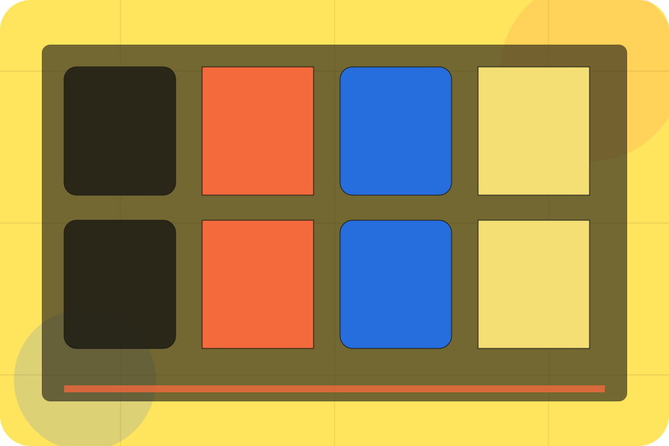

Services / 01
Services by Talent
Services shaped for recruitment, hr & workplace services decisions.
Services opens as a clear recruitment decision hub: what Talent offers, who it helps, why it matters, and which route to take first.
The first screen combines positioning, proof, primary action, and fast internal navigation, so people can act immediately or compare the rest of the services route with context.
Recruitment scopeCompare optionsRequest advice
Yellow job magazine hero
Choose the audience
Select the closest route and Talent keeps the next step, proof, and follow-up expectation aligned with matching confidence for two audiences.

Services / 02
Recruitment
Recruitment explains the practical scope, best-fit situations, and expected outcome so recruitment visitors can compare options without decoding jargon.
The section keeps the offer concrete: what is included, who it is best for, what decision it supports, and which linked route gives the deeper detail.
Explore ServicesBest Fit
Who should use recruitment and when it belongs in the services journey.
What Changes
The practical benefit visitors should expect after choosing this route.
Deeper Route
Where to compare details, pricing, support, or contact options before committing.
Services / 03
HR
HR explains the practical scope, best-fit situations, and expected outcome so recruitment visitors can compare options without decoding jargon.
The section keeps the offer concrete: what is included, who it is best for, what decision it supports, and which linked route gives the deeper detail.
Explore ServicesBest Fit
Who should use hr and when it belongs in the services journey.
What Changes
The practical benefit visitors should expect after choosing this route.
Deeper Route
Where to compare details, pricing, support, or contact options before committing.
Services / 04
Payroll
Payroll explains the practical scope, best-fit situations, and expected outcome so recruitment visitors can compare options without decoding jargon.
The section keeps the offer concrete: what is included, who it is best for, what decision it supports, and which linked route gives the deeper detail.
Explore ServicesBest Fit
Who should use payroll and when it belongs in the services journey.
Services / 05
Training
Training explains the practical scope, best-fit situations, and expected outcome so recruitment visitors can compare options without decoding jargon.
The section keeps the offer concrete: what is included, who it is best for, what decision it supports, and which linked route gives the deeper detail.
Explore ServicesBest Fit
Who should use training and when it belongs in the services journey.
What Changes
The practical benefit visitors should expect after choosing this route.
Deeper Route
Where to compare details, pricing, support, or contact options before committing.
Services / 06
Policy
Policy explains the practical scope, best-fit situations, and expected outcome so recruitment visitors can compare options without decoding jargon.
The section keeps the offer concrete: what is included, who it is best for, what decision it supports, and which linked route gives the deeper detail.
Explore ServicesBest Fit
Who should use policy and when it belongs in the services journey.
What Changes
The practical benefit visitors should expect after choosing this route.
Deeper Route
Where to compare details, pricing, support, or contact options before committing.
Services / 07
Support
Support explains the practical scope, best-fit situations, and expected outcome so recruitment visitors can compare options without decoding jargon.
The section keeps the offer concrete: what is included, who it is best for, what decision it supports, and which linked route gives the deeper detail.
Open ContactBest Fit
Who should use support and when it belongs in the services journey.
What Changes
The practical benefit visitors should expect after choosing this route.
Deeper Route
Where to compare details, pricing, support, or contact options before committing.
Services / 08
Benefits
Benefits defines the better state Talent is built to create, with enough detail to make the promise believable.
A recruitment magazine site with candidate/employer split, bold editorial cards, people proof, and upload routes. The section grounds that direction in concrete benefits, visible tradeoffs, and a next route visitors can use when the promise feels relevant.
Explore ServicesBetter State
Benefits defines what becomes clearer, easier, or safer when Talent is the chosen route.
Practical Gain
The benefit is tied to matching confidence for two audiences, not a vague quality claim.
Proof Route
Visitors get a linked path to compare the promise against services, standards, or examples.
Services / 09
Scope
Scope explains the practical scope, best-fit situations, and expected outcome so recruitment visitors can compare options without decoding jargon.
The section keeps the offer concrete: what is included, who it is best for, what decision it supports, and which linked route gives the deeper detail.
Explore ServicesBest Fit
Who should use scope and when it belongs in the services journey.
What Changes
The practical benefit visitors should expect after choosing this route.
Deeper Route
Where to compare details, pricing, support, or contact options before committing.
Services / 10
Start Hiring
Talent closes the services route with a clear action, a quick reminder of the value, and a low-friction way to start hiring.
Visitors who are ready can use the primary action. Visitors who are still comparing can scan the section links, proof, and support routes before they start hiring.
Start HiringThe final block keeps the choice simple: act now, compare one more proof route, or send enough detail for a focused response.
Start Hiringmatching confidence for two audiences
Start Hiring
A recruitment magazine site with candidate/employer split, bold editorial cards, people proof, and upload routes. Services ends with a direct path to start hiring, plus enough context for visitors who still need to compare.
Notes
Information is provided for planning and should be reviewed for the final client, location, and operating rules.